United States
New York City
five boroughs, day trips & the best tables
508 places · 6 areas · every one sourced, pinned and status-checked · last checked . Ordered by tier, then by number of named sources. How we choose
slice · bagel · Empire State Building
Start with Katz's Delicatessen
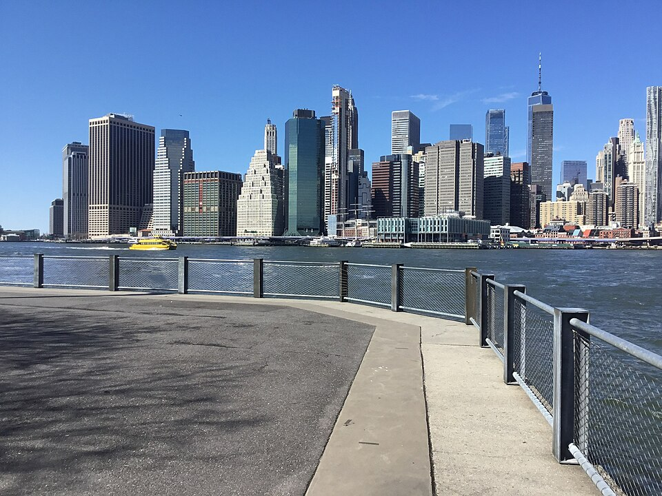
Start with

Manhattan 264 places · area 1 of 6
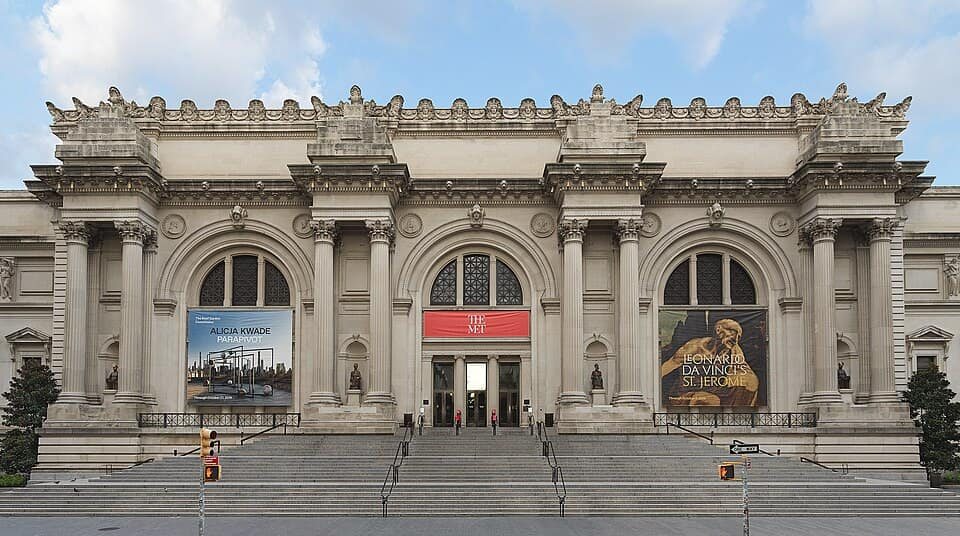
Photo: Hugo Schneider · CC BY-SA 2.0 · Wikimedia Commons (resized) 1 Must see within Manhattan
The Metropolitan Museum of Art
Encyclopedic art museum on Museum Mile with over 1.5 million works spanning 5,000 years, from Egyptian temples to European masters.
Your guide’s note Pay-what-you-wish only for NY State residents; others pay a fixed admission. Closed Wednesdays.
1000 Fifth Avenue, New York, NY 10028
Recommended by ,
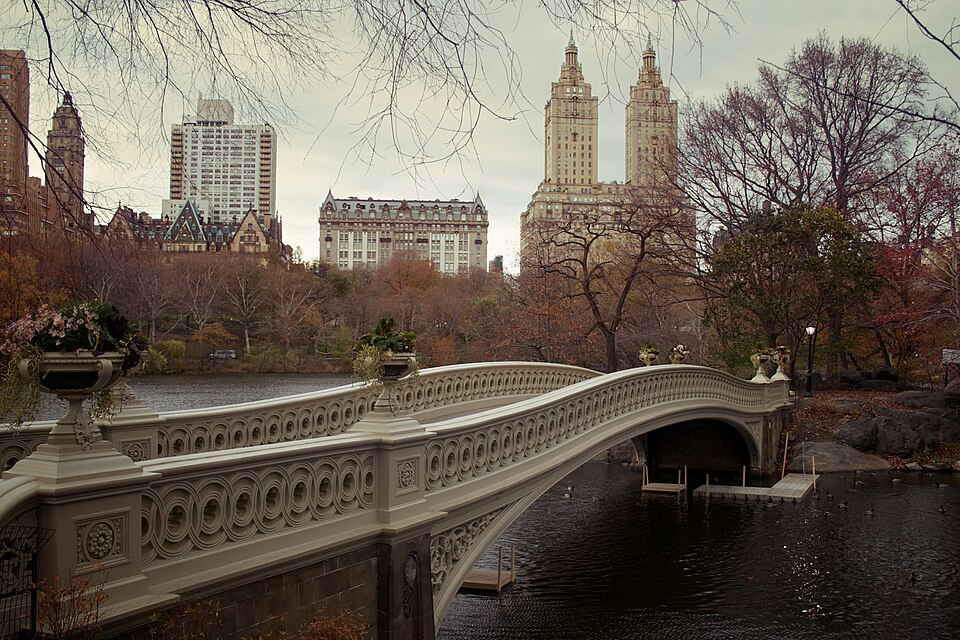
Photo: David Joyce from Gray, TN, United States · CC BY-SA 2.0 · Wikimedia Commons (resized) 2 Must see within Manhattan
Central Park
843-acre landscaped park by Olmsted and Vaux running from 59th to 110th Street, with Bethesda Terrace, the Ramble, and the Reservoir loop.
Look for Free and open 6am to 1am daily.
Central Park, New York, NY 10024
Recommended by ,
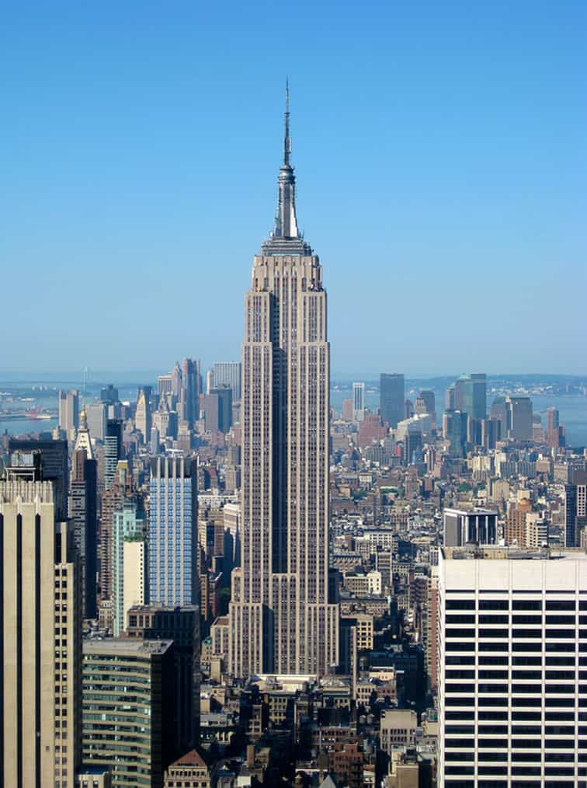
Photo: Jiuguang Wang · Public domain · Wikimedia Commons (resized) 3 Must see within Manhattan
Empire State Building
1931 Art Deco skyscraper with 86th and 102nd floor observatories offering 360-degree views across the city and beyond.
Your guide’s note Timed tickets recommended; sunset slots sell out. Open late, past 11pm.
20 West 34th Street, New York, NY 10001
Recommended by ,
-
4 Must see within Manhattan
Museum of Modern Art (MoMA)
Six floors of modern and contemporary art holding Van Gogh's Starry Night, Monet's Water Lilies, and a landmark design and film collection.
Look for Midtown
11 W 53rd St, New York, NY 10019
Recommended by ,
-
5 Must see within Manhattan
Radio City Music Hall
The 1932 Art Deco showplace inside Rockefeller Center, home of the Rockettes and the largest indoor theater of its era.
Look for Midtown
1260 Sixth Ave, New York, NY 10020
Recommended by ,
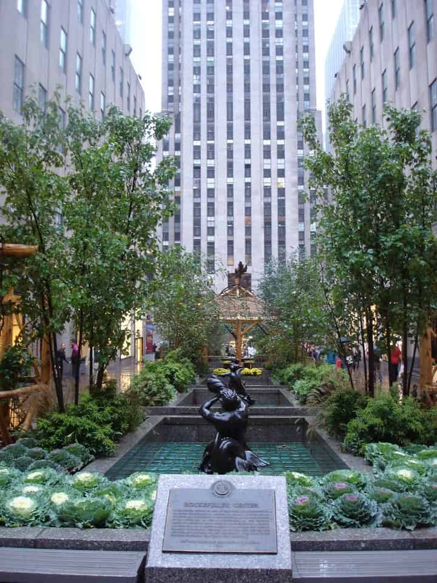
Photo: hibino · CC BY 2.0 · Wikimedia Commons (resized) 6 Must see within Manhattan
Rockefeller Center
A 22-acre Art Deco complex with the golden Prometheus fountain, seasonal ice rink, and the Channel Gardens promenade.
Look for Midtown
45 Rockefeller Plaza, New York, NY 10111
Recommended by ,
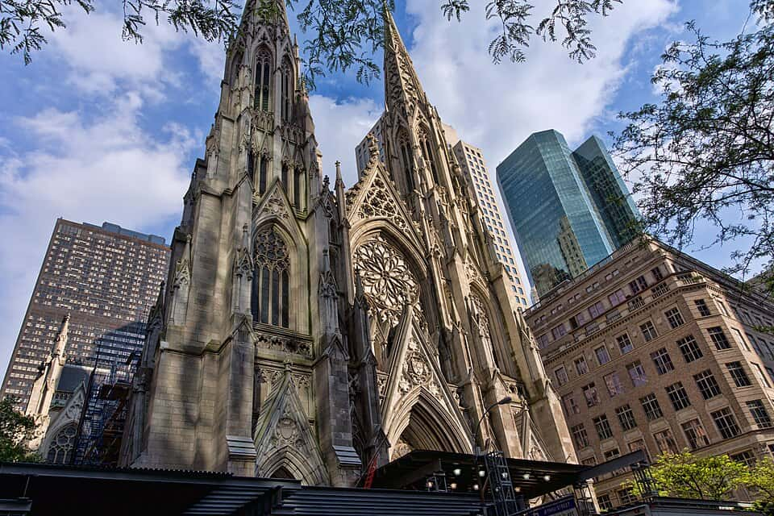
Photo: Jean-Christophe BENOIST · CC BY 3.0 · Wikimedia Commons (resized) 7 Must see within Manhattan
St. Patrick's Cathedral
A Neo-Gothic Roman Catholic cathedral of white marble on Fifth Avenue, its twin spires rising 330 feet opposite Rockefeller Center.
Look for Midtown
631 Fifth Ave, New York, NY 10022
Recommended by ,
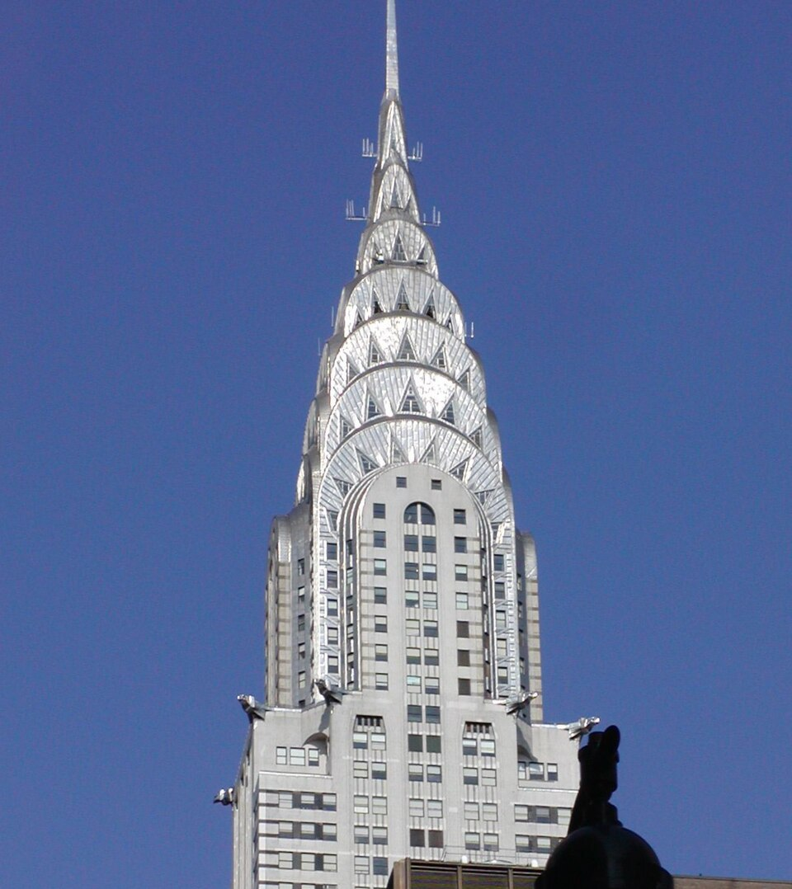
Photo: Petri Krohn · CC BY-SA 3.0 · Wikimedia Commons (resized) 8 Must see within Manhattan
Chrysler Building
The 1930 Art Deco skyscraper with a stainless-steel sunburst crown, long a candidate for the city's most beautiful tower.
Look for Midtown
405 Lexington Ave, New York, NY 10174
Recommended by ,
-
9 Must see within Manhattan
Bryant Park
A formal green behind the main library with a carousel, free lawn games, a winter rink and holiday market, and cafe kiosks.
Look for Midtown
Bryant Park, New York, NY 10018
Recommended by ,
-
10 Must see within Manhattan
Chelsea Market
A block-long food hall in the former Nabisco Oreo factory, packed with vendors, tacos, seafood, and specialty shops.
Look for Chelsea
75 Ninth Ave, New York, NY 10011
Recommended by ,
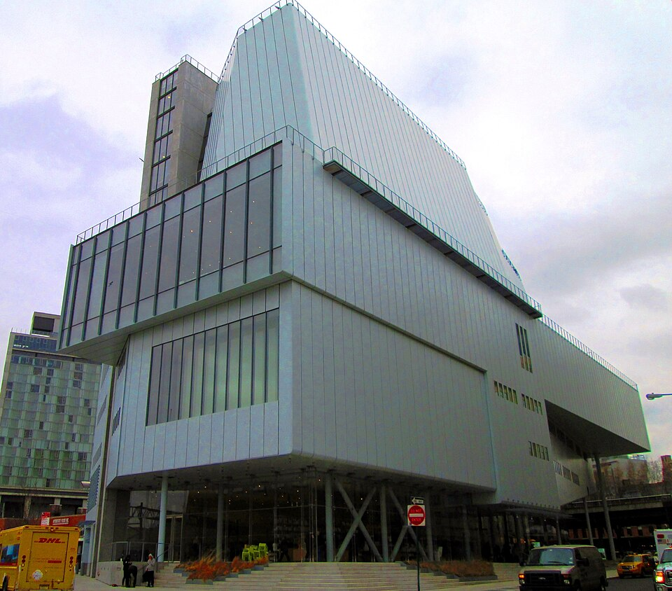
Photo: Beyond My Ken · CC BY-SA 4.0 · Wikimedia Commons (resized) 11 Must see within Manhattan
Whitney Museum of American Art
Renzo Piano's tiered Meatpacking building with terraces over the Hudson, showing American art from the Whitney's deep 20th-century collection.
Look for Meatpacking
99 Gansevoort St, New York, NY 10014
Recommended by ,
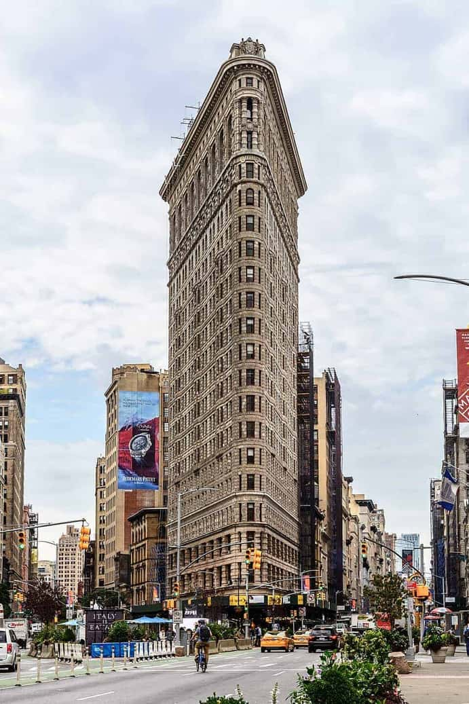
Photo: dconvertini · CC BY-SA 2.0 · Wikimedia Commons (resized) 12 Must see within Manhattan
Flatiron Building
Daniel Burnham's 1902 triangular terracotta tower wedged where Broadway crosses Fifth Avenue; a defining view (exterior only, under residential conversion).
Look for Flatiron
175 Fifth Ave, New York, NY 10010
Recommended by ,
-
13 Must see within Manhattan
Stonewall National Monument
The West Village site of the 1969 uprising, the first U.S. national monument to LGBTQ history, with Christopher Park and an NPS visitor center.
Look for West Village
51 Christopher St, New York, NY 10014
Recommended by ,
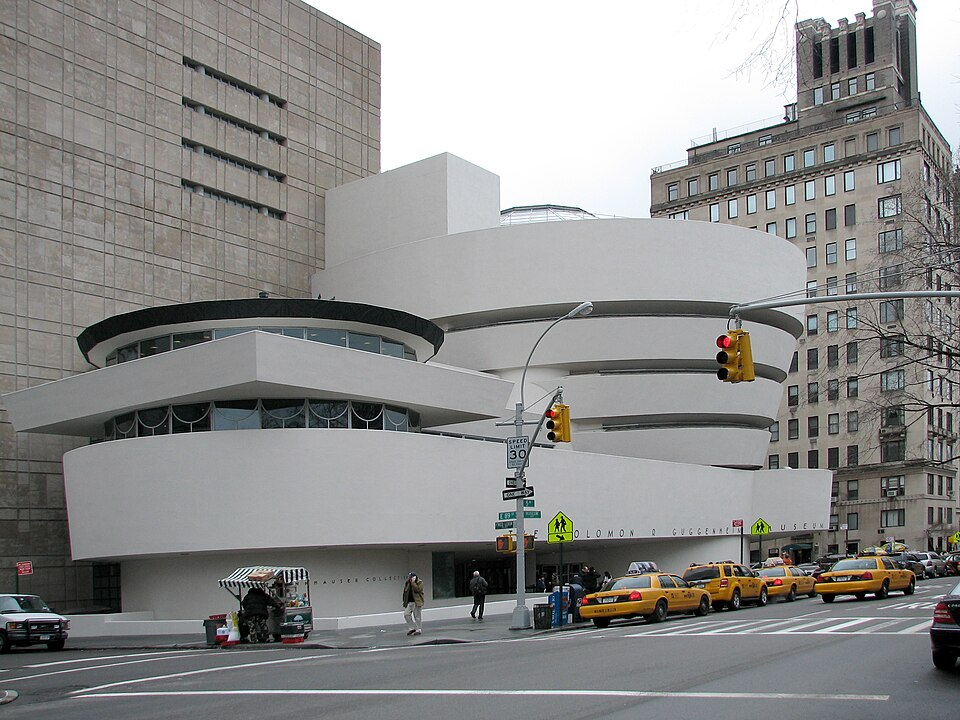
Photo: Kristoffer Arvidsson (Göteborgs konstmuseum) · CC BY-SA 4.0 · Wikimedia Commons (resized) 14 Must see within Manhattan
Solomon R. Guggenheim Museum
Frank Lloyd Wright's white spiral ramp on Museum Mile, a modern-art collection you view by descending one continuous coil.
Look for modern art
1071 Fifth Ave, New York NY 10128
Recommended by ,
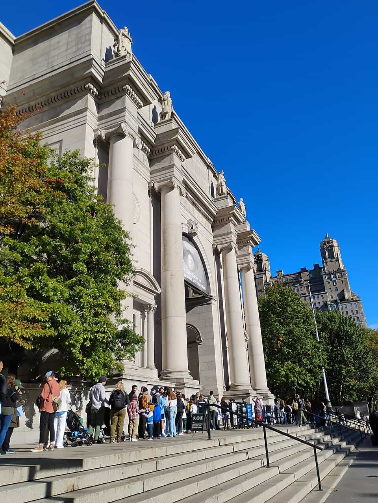
Photo: Ferfive · CC BY 4.0 · Wikimedia Commons (resized) 15 Must see within Manhattan
American Museum of Natural History
The dinosaur halls, blue-whale model and Rose Center planetarium anchor one of the world's great natural-history collections.
Look for dinosaurs
200 Central Park West, New York NY 10024
Recommended by ,
-
16 Must see within Manhattan
Apollo Theater
Harlem's landmark stage where Amateur Night launched Ella Fitzgerald, James Brown and countless others since 1934.
Look for music venue
253 W 125th St, New York NY 10027
Recommended by ,
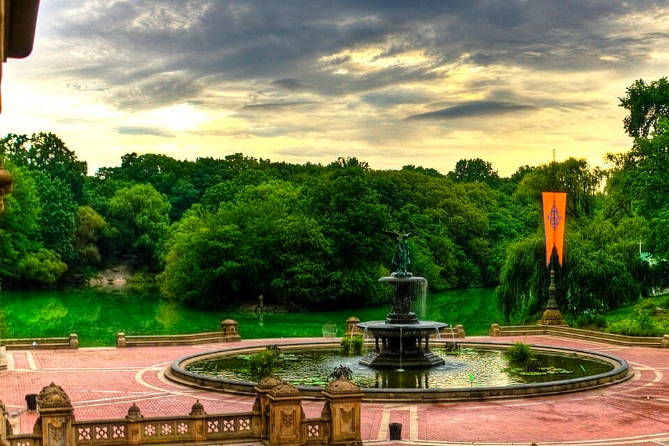
Photo: Francisco Diez from New Jersey, USA · CC BY 2.0 · Wikimedia Commons (resized) 17 Must see within Manhattan
Bethesda Terrace and Fountain
Central Park's grand ceremonial heart, its 'Angel of the Waters' fountain framed by an arcade of tiled ceilings above the Lake.
Look for landmark
Central Park, Terrace Dr at 72nd St, New York NY 10024
Recommended by ,
-
18 Must see within Manhattan · Middle Eastern
The Halal Guys
The 1990 cart that made NYC chicken-and-gyro-over-rice famous, still drawing a line down the block at the southwest corner of 53rd & 6th until the early hours — the white sauce (and the red) started here.
SW corner of W 53rd St & 6th Ave, New York, NY 10019
Recommended by ,
-
19 Must see within Manhattan · Jewish deli
Katz's Delicatessen
Cash-and-ticket Lower East Side deli open since 1888, serving 15,000 lbs of pastrami a week under old neon and salami-hanging signs.
205 East Houston Street, New York, NY 10002
Recommended by ,
-
20 Must see within Manhattan · Pizza
Joe's Pizza
Greenwich Village slice institution since 1975, turning out thin, foldable New York-style plain slices from a stand-up counter until the early hours.
7 Carmine Street, New York, NY 10014
Recommended by ,
-
21 Must see within Manhattan · Korean
Cote
Michelin-starred Korean steakhouse mashing up KBBQ and an American chophouse, grilling dry-aged USDA Prime tableside.
Look for Flatiron
16 W 22nd St, New York, NY 10010
Recommended by ,
-
22 Must see within Manhattan · Italian
Via Carota
Jody Williams and Rita Sodi's beloved rustic West Village gastroteca known for market vegetables and handmade pastas.
Look for West Village
51 Grove St, New York, NY 10014
Recommended by ,
-
23 Must see within Manhattan · American
Gramercy Tavern
Danny Meyer's Michelin-starred seasonal-American institution; the front tavern room is walk-in and serves its famous burger.
Look for Flatiron
42 E 20th St, New York, NY 10003
Recommended by ,
-
24 Must see within Manhattan · American
Veselka
Family-run Ukrainian diner in Little Ukraine since 1954, open late for pierogi, borscht, and potato pancakes.
Look for East Village
144 Second Ave, New York, NY 10003
Recommended by ,

Brooklyn 76 places · area 2 of 6

Queens 71 places · area 3 of 6

The Bronx 42 places · area 4 of 6

Staten Island 36 places · area 5 of 6

Day Trips 19 places · area 6 of 6
How we choose
Every place is recommended by named sources (review-aggregator star ratings never count as the recommender), pinned to its door from a published coordinate, and status-checked. Closed places stay, flagged, so you know they’re gone.
- Must see
- The places to plan a visit around — graded within each area, not across the city.
- Worth the detour
- Strong picks, worth going out of your way for.
- Deep cut
- For the curious: smaller, odder, more local.
Within each area, places are ordered by tier, then by number of named sources — never by popularity. We don’t add ratings, prices or opening hours of our own. Any quoted in a write-up are the source’s, dated.
219 sights and 289 places to eat across the five boroughs and day trips, each traceable to the source that named it — Michelin, Eater, The Infatuation, Atlas Obscura, NYC Parks and more.
Take New York City with you
Every place, its sources, the Guidebook and the photos at a small size. Map tiles are not saved: offline, the map shows our own pin schematic and every place stays listed.